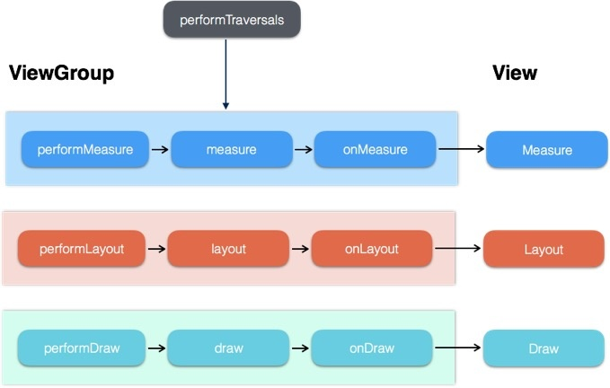
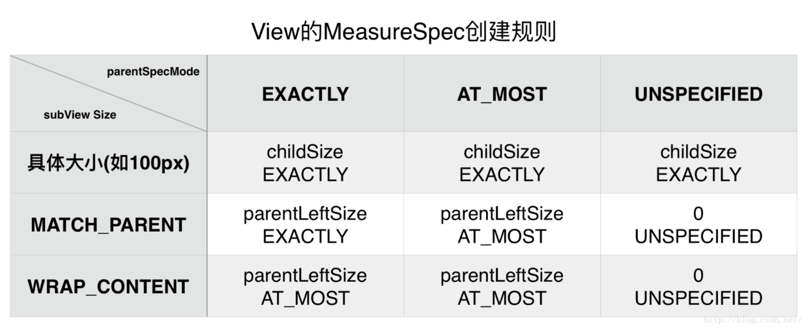
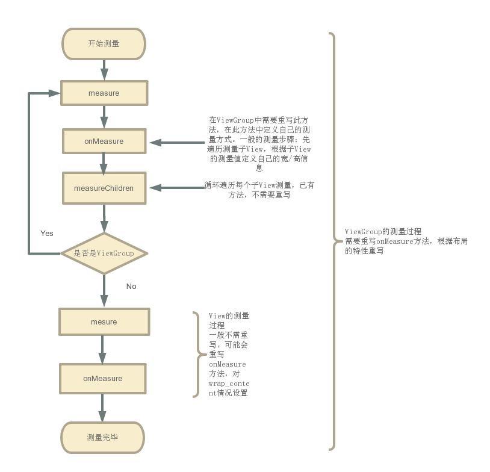
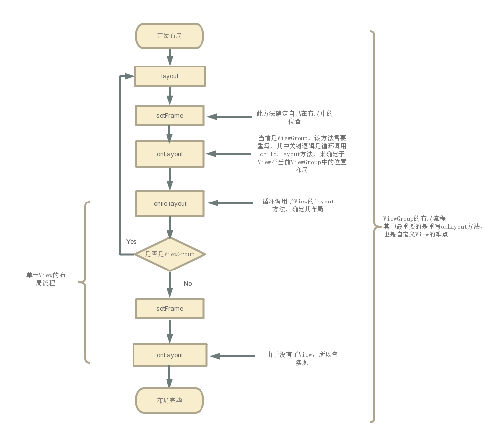
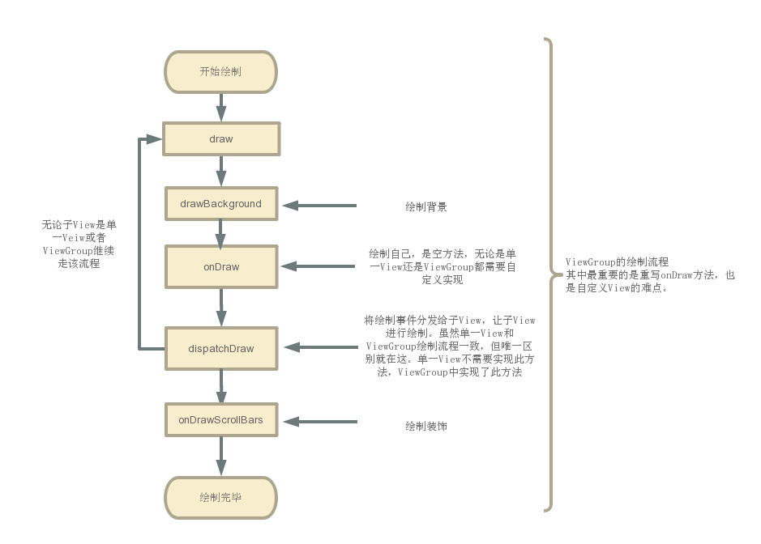

一、View绘制的流程框架

View的绘制是从上往下一层层迭代下来的。DecorView-->ViewGroup（--->ViewGroup）-->View ，按照这个流程从上往下，依次measure(测量),layout(布局),draw(绘制)。

二、Measure流程
顾名思义，就是测量每个控件的大小。
调用measure()方法，进行一些逻辑处理，然后调用onMeasure()方法，在其中调用setMeasuredDimension()设定View的宽高信息，完成View的测量操作。
public final void measure(int widthMeasureSpec, int heightMeasureSpec) {
}
measure()方法中，传入了两个参数 widthMeasureSpec, heightMeasureSpec 表示View的宽高的一些信息。
protected void onMeasure(int widthMeasureSpec, int heightMeasureSpec) {
setMeasuredDimension(getDefaultSize(getSuggestedMinimumWidth(), widthMeasureSpec),
getDefaultSize(getSuggestedMinimumHeight(), heightMeasureSpec));
}
由上述流程来看Measure流程很简单，关键点是在于widthMeasureSpec, heightMeasureSpec这两个参数信息怎么获得？
如果有了widthMeasureSpec, heightMeasureSpec，通过一定的处理(可以重写，自定义处理步骤)，从中获取View的宽/高，调用setMeasuredDimension()方法，指定View的宽高，完成测量工作。
MeasureSpec的确定
先介绍下什么是MeasureSpec？
MeasureSpec由两部分组成，一部分是测量模式，另一部分是测量的尺寸大小。
其中，Mode模式共分为三类
UNSPECIFIED ：不对View进行任何限制，要多大给多大，一般用于系统内部
EXACTLY：对应LayoutParams中的match_parent和具体数值这两种模式。检测到View所需要的精确大小，这时候View的最终大小就是SpecSize所指定的值，
AT_MOST ：对应LayoutParams中的wrap_content。View的大小不能大于父容器的大小。
那么MeasureSpec又是如何确定的？
对于DecorView，其确定是通过屏幕的大小，和自身的布局参数LayoutParams。
这部分很简单，根据LayoutParams的布局格式（match_parent，wrap_content或指定大小），将自身大小，和屏幕大小相比，设置一个不超过屏幕大小的宽高，以及对应模式。
对于其他View（包括ViewGroup），其确定是通过父布局的MeasureSpec和自身的布局参数LayoutParams。
这部分比较复杂。以下列图表表示不同的情况：

当子View的LayoutParams的布局格式是wrap_content，可以看到子View的大小是父View的剩余尺寸，和设置成match_parent时，子View的大小没有区别。为了显示区别，一般在自定义View时，需要重写onMeasure方法，处理wrap_content时的情况，进行特别指定。
从这里看出MeasureSpec的指定也是从顶层布局开始一层层往下去，父布局影响子布局。
可能关于MeasureSpec如何确定View大小还有些模糊，篇幅有限，没详细具体展开介绍，可以看这篇文章
View的测量流程：

三、Layout流程
测量完View大小后，就需要将View布局在Window中，View的布局主要通过确定上下左右四个点来确定的。
其中布局也是自上而下，不同的是ViewGroup先在layout()中确定自己的布局，然后在onLayout()方法中再调用子View的layout()方法，让子View布局。在Measure过程中，ViewGroup一般是先测量子View的大小，然后再确定自身的大小。
public void layout(int l, int t, int r, int b) {
// 当前视图的四个顶点
int oldL = mLeft;
int oldT = mTop;
int oldB = mBottom;
int oldR = mRight;
// setFrame（） / setOpticalFrame（）：确定View自身的位置
// 即初始化四个顶点的值，然后判断当前View大小和位置是否发生了变化并返回
boolean changed = isLayoutModeOptical(mParent) ?
setOpticalFrame(l, t, r, b) : setFrame(l, t, r, b);
//如果视图的大小和位置发生变化，会调用onLayout（）
if (changed || (mPrivateFlags & PFLAG_LAYOUT_REQUIRED) == PFLAG_LAYOUT_REQUIRED) {
// onLayout（）：确定该View所有的子View在父容器的位置
onLayout(changed, l, t, r, b);
...
}
上面看出通过 setFrame（） / setOpticalFrame（）：确定View自身的位置，通过onLayout()确定子View的布局。 setOpticalFrame（）内部也是调用了setFrame（），所以具体看setFrame（）怎么确定自身的位置布局。
protected boolean setFrame(int left, int top, int right, int bottom) {
...
// 通过以下赋值语句记录下了视图的位置信息，即确定View的四个顶点
// 即确定了视图的位置
mLeft = left;
mTop = top;
mRight = right;
mBottom = bottom;
mRenderNode.setLeftTopRightBottom(mLeft, mTop, mRight, mBottom);
}
确定了自身的位置后，就要通过onLayout()确定子View的布局。onLayout()是一个可继承的空方法。
protected void onLayout(boolean changed, int left, int top, int right, int bottom) {
}
如果当前View就是一个单一的View，那么没有子View，就不需要实现该方法。
如果当前View是一个ViewGroup，就需要实现onLayout方法，该方法的实现个自定义ViewGroup时其特性有关，必须自己实现。
由此便完成了一层层的的布局工作。
View的布局流程：

四、Draw过程
View的绘制过程遵循如下几步：
①绘制背景 background.draw(canvas)
②绘制自己（onDraw）
③绘制Children(dispatchDraw)
④绘制装饰（onDrawScrollBars）
从源码中可以清楚地看出绘制的顺序。
public void draw(Canvas canvas) {
// 所有的视图最终都是调用 View 的 draw （）绘制视图（ ViewGroup 没有复写此方法）
// 在自定义View时，不应该复写该方法，而是复写 onDraw(Canvas) 方法进行绘制。
// 如果自定义的视图确实要复写该方法，那么需要先调用 super.draw(canvas)完成系统的绘制，然后再进行自定义的绘制。
...
int saveCount;
if (!dirtyOpaque) {
// 步骤1： 绘制本身View背景
drawBackground(canvas);
}
// 如果有必要，就保存图层（还有一个复原图层）
// 优化技巧：
// 当不需要绘制 Layer 时，“保存图层“和“复原图层“这两步会跳过
// 因此在绘制的时候，节省 layer 可以提高绘制效率
final int viewFlags = mViewFlags;
if (!verticalEdges && !horizontalEdges) {
if (!dirtyOpaque)
// 步骤2：绘制本身View内容 默认为空实现， 自定义View时需要进行复写
onDraw(canvas);
......
// 步骤3：绘制子View 默认为空实现 单一View中不需要实现，ViewGroup中已经实现该方法
dispatchDraw(canvas);
........
// 步骤4：绘制滑动条和前景色等等
onDrawScrollBars(canvas);
..........
return;
}
...
}
无论是ViewGroup还是单一的View，都需要实现这套流程，不同的是，在ViewGroup中，实现了 dispatchDraw()方法，而在单一子View中不需要实现该方法。自定义View一般要重写onDraw()方法，在其中绘制不同的样式。
View绘制流程：

五、总结
从View的测量、布局和绘制原理来看，要实现自定义View，根据自定义View的种类不同，可能分别要自定义实现不同的方法。但是这些方法不外乎：onMeasure()方法，onLayout()方法，onDraw()方法。
onMeasure()方法：单一View，一般重写此方法，针对wrap_content情况，规定View默认的大小值，避免于match_parent情况一致。ViewGroup，若不重写，就会执行和单子View中相同逻辑，不会测量子View。一般会重写onMeasure()方法，循环测量子View。
onLayout()方法:单一View，不需要实现该方法。ViewGroup必须实现，该方法是个抽象方法，实现该方法，来对子View进行布局。
onDraw()方法：无论单一View，或者ViewGroup都需要实现该方法，因其是个空方法